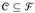

|
|
< Day Day Up > |
|
The set-covering problem is an optimization problem that models many resource-selection problems. Its corresponding decision problem generalizes the NP-complete vertex-cover problem and is therefore also NP-hard. The approximation algorithm developed to handle the vertex-cover problem doesn't apply here, however, and so we need to try other approaches. We shall examine a simple greedy heuristic with a logarithmic approximation ratio. That is, as the size of the instance gets larger, the size of the approximate solution may grow, relative to the size of an optimal solution. Because the logarithm function grows rather slowly, however, this approximation algorithm may nonetheless give useful results.
An instance (X,  ) of the set-covering problem consists of a finite set X and a family
) of the set-covering problem consists of a finite set X and a family  of subsets of X, such that every element of X belongs to at least one subset in
of subsets of X, such that every element of X belongs to at least one subset in  :
:
We say that a subset covers its elements. The problem is to find a minimum-size subset  whose members cover all of X:
We say that any  satisfying equation (35.8) covers X. Figure 35.3 illustrates the set-covering problem. The size of
satisfying equation (35.8) covers X. Figure 35.3 illustrates the set-covering problem. The size of  is defined as the number of sets it contains, rather than the number of individual elements in these sets. In Figure 35.3, the minimum set cover has size 3.
is defined as the number of sets it contains, rather than the number of individual elements in these sets. In Figure 35.3, the minimum set cover has size 3.
The set-covering problem is an abstraction of many commonly arising combinatorial problems. As a simple example, suppose that X represents a set of skills that are needed to solve a problem and that we have a given set of people available to work on the problem. We wish to form a committee, containing as few people as possible, such that for every requisite skill in X, there is a member of the committee having that skill. In the decision version of the set-covering problem, we ask whether or not a covering exists with size at most k, where k is an additional parameter specified in the problem instance. The decision version of the problem is NP-complete, as Exercise 35.3-2 asks you to show.
The greedy method works by picking, at each stage, the set S that covers the greatest number of remaining elements that are uncovered.
GREEDY-SET-COVER(X,) 1 U ← X 2 3 while U ≠ Ø 4 do select an that maximizes |S ∪ U | 5 U ← U - S 6 7 return
In the example of Figure 35.3, GREEDY-SET-COVER adds to  the sets S1, S4, S5, and S3, in order.
the sets S1, S4, S5, and S3, in order.
The algorithm works as follows. The set U contains, at each stage, the set of remaining uncovered elements. The set  contains the cover being constructed. Line 4 is the greedy decision-making step. A subset S is chosen that covers as many uncovered elements as possible (with ties broken arbitrarily). After S is selected, its elements are removed from U , and S is placed in
contains the cover being constructed. Line 4 is the greedy decision-making step. A subset S is chosen that covers as many uncovered elements as possible (with ties broken arbitrarily). After S is selected, its elements are removed from U , and S is placed in  . When the algorithm terminates, the set
. When the algorithm terminates, the set  contains a subfamily of
contains a subfamily of  that covers X.
that covers X.
The algorithm GREEDY-SET-COVER can easily be implemented to run in time polynomial in |X| and | |. Since the number of iterations of the loop on lines 3-6 is bounded from above by min(|X| , |
|. Since the number of iterations of the loop on lines 3-6 is bounded from above by min(|X| , | |), and the loop body can be implemented to run in time O(|X||
|), and the loop body can be implemented to run in time O(|X|| |), there is an implementation that runs in time O(|X||
|), there is an implementation that runs in time O(|X|| | min(|X|, |
| min(|X|, | |)). Exercise 35.3-3 asks for a linear-time algorithm.
|)). Exercise 35.3-3 asks for a linear-time algorithm.
We now show that the greedy algorithm returns a set cover that is not too much larger than an optimal set cover. For convenience, in this chapter we denote the dth harmonic number  (see Section A.1) by H (d). As a boundary condition, we define H (0) = 0.
(see Section A.1) by H (d). As a boundary condition, we define H (0) = 0.
GREEDY-SET-COVER is a polynomial-time ρ(n)-approximation algorithm, where
Proof We have already shown that GREEDY-SET-COVER runs in polynomial time.
To show that GREEDY-SET-COVER is a ρ(n)-approximation algorithm, we assign a cost of 1 to each set selected by the algorithm, distribute this cost over the elements covered for the first time, and then use these costs to derive the desired relationship between the size of an optimal set cover and the size of the set cover  returned by the algorithm. Let Si denote the ith subset selected by GREEDY-SET-COVER; the algorithm incurs a cost of 1 when it adds Si to
returned by the algorithm. Let Si denote the ith subset selected by GREEDY-SET-COVER; the algorithm incurs a cost of 1 when it adds Si to  . We spread this cost of selecting Si evenly among the elements covered for the first time by Si. Let cx denote the cost allocated to element x, for each x ∈ X. Each element is assigned a cost only once, when it is covered for the first time. If x is covered for the first time by Si, then
. We spread this cost of selecting Si evenly among the elements covered for the first time by Si. Let cx denote the cost allocated to element x, for each x ∈ X. Each element is assigned a cost only once, when it is covered for the first time. If x is covered for the first time by Si, then
At each step of the algorithm, 1 unit of cost is assigned, and so
The cost assigned to the optimal cover is
and since each x ∈ X is in at least one set , we have
Combining the previous two inequalities, we have that
The remainder of the proof rests on the following key inequality, which we shall prove shortly. For any set S belonging to the family  ,
,
From inequalities (35.9) and (35.10), it follows that
thus proving the theorem.
All that remains is to prove inequality (35.10). Consider any set and i = 1, 2, ..., | |, and let
|, and let
ui = |S - (S1 ∪; S2 ∪; ··· ∪ Si)|
be the number of elements in S remaining uncovered after S1, S2, ..., Si have been selected by the algorithm. We define u0 = |S| to be the number of elements of S, which are all initially uncovered. Let k be the least index such that uk = 0, so that each element in S is covered by at least one of the sets S1, S2, ..., Sk. Then, ui-1 ≥ ui, and ui-1 - ui elements of S are covered for the first time by Si, for i = 1, 2, ..., k. Thus,
Observe that
|
|Si - (S1 ∪ S2 ∪ ··· ∪ Si-1)| |
≥ |
|S - (S1 ∪ S2 ∪ ··· ∪ Si-1)| |
|
= |
ui-1, |
because the greedy choice of Si guarantees that S cannot cover more new elements than Si does (otherwise, S would have been chosen instead of Si). Consequently, we obtain

We now bound this quantity as follows:
which completes the proof of inequality (35.10).
GREEDY-SET-COVER is a polynomial-time (ln |X|+ 1)-approximation algorithm.
Proof Use inequality (A.14) and Theorem 35.4.
In some applications, is a small constant, and so the solution returned by GREEDY-SET-COVER is at most a small constant times larger than optimal. One such application occurs when this heuristic is used to obtain an approximate vertex cover for a graph whose vertices have degree at most 3. In this case, the solution found by GREEDY-SET-COVER is not more than H (3) = 11/6 times as large as an optimal solution, a performance guarantee that is slightly better than that of APPROX-VERTEX-COVER.
Consider each of the following words as a set of letters: {arid, dash, drain, heard, lost, nose, shun, slate, snare, thread}. Show which set cover GREEDY-SET-COVER produces when ties are broken in favor of the word that appears first in the dictionary.
Show that the decision version of the set-covering problem is NP-complete by reduction from the vertex-cover problem.
GREEDY-SET-COVER can return a number of different solutions, depending on how we break ties in line 4. Give a procedure BAD-SET-COVER-INSTANCE(n) that returns an n-element instance of the set-covering problem for which, depending on how ties are broken in line 4, GREEDY-SET-COVER can return number of different solutions that is exponential in n.
|
|
< Day Day Up > |
|